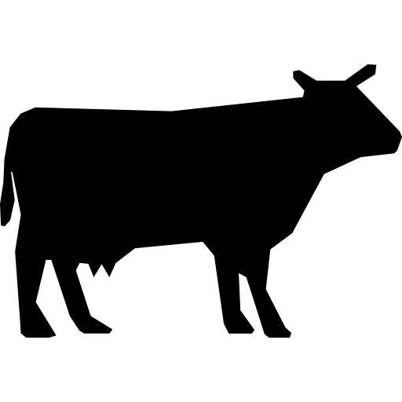
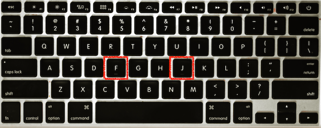

<!DOCTYPE html>
<html>

<head>
    <title>Generating random sequences of finger-taps</title>
    <meta http-equiv="Content-Type" content="text/html; charset=utf-8">
    <script src="jsPsych/jspsych.js" charset="utf-8"></script>
    <script src="plugins/jspsych-instructions-mm.js" charset="utf-8"></script>
    <script src="plugins/jspsych-countdown-mm.js" charset="utf-8"></script>
    <script src="plugins/jspsych-gradient-feedback-mm.js" charset="utf-8"></script>
    <script src="plugins/jspsych-gradient-feedback-multi-mm.js" charset="utf-8"></script>
      <script src="plugins/jspsych-survey-text.js" charset="utf-8"></script>
    <script src="jsPsych/plugins/jspsych-image-button-response.js" charset="utf-8"></script>
    <script src="jsPsych/plugins/jspsych-fullscreen.js" charset="utf-8"></script>
    <!-- <script src="jspsych-stroop-training.js" charset="utf-8"></script> -->
    <script src="jsPsych/plugins/jspsych-html-keyboard-response.js" charset="utf-8"></script>
    <script src="jsPsych/plugins/jspsych-image-keyboard-response.js" charset="utf-8"></script>
    <script src="jsPsych/plugins/jspsych-audio-keyboard-response.js" charset="utf-8"></script>
    <script src="jsPsych/plugins/jspsych-audio-button-response.js" charset="utf-8"></script>
    <script src="jsPsych/plugins/jspsych-video-button-response.js" charset="utf-8"></script>
    <script src="jsPsych/plugins/jspsych-video-keyboard-response.js" charset="utf-8"></script>
    <script src="jsPsych/plugins/jspsych-survey-multi-select.js" charset="utf-8"></script>
    <script src="jsPsych/plugins/jspsych-preload.js" charset="utf-8"></script>
    <script src="plugins/jspsych-keyboard-likert.js" charset="utf-8"></script>
    <script src="plugins/jspsych-quiz-multi-choice.js" charset="utf-8"></script>
    <script src="plugins/jspsych-audio-keyboard-response-multi.js" charset="utf-8"></script>
    <script src="/assets/javascripts/jatos.js"></script>
    <script src="jsapen.js"></script>
    <link href="jsPsych/css/jspsych.css" rel="stylesheet" type="text/css">
    </link>
    <link href="ftrsgt-online.css" rel="stylesheet" type="text/css">
    </link>
</head>

<body>
    <script>
        var debug = false;

        /* create timeline */
        var timeline = [];


        /** ------------ PARAMETERS -------------- **/
        var nblocks = 20;   // number of blocks (=number probes)
        var min_trials_probe = 40; // minimum number of trials before a probe
        var max_trials_probe = 80; // maximum number of trials between two probes
        var ntraining = 10; // number of beeps in training session
        var ntrainingprobes = 5; //  number of blocks in the different trainings randomness, preciceness and both.
        var animals=["Dog", "Cow", "Rooster","Elephant", "Owl"];

        var check_misses_nback=4; // monitor missing responses backward
        var prolific_pid="undefined";
        var prolific_studyid="undefined";
        var prolific_sessionid="undefined";
        var subject = jsPsych.randomization.randomID(12);
        var datetime=Date().toLocaleString();
        var left_button="f";
        var right_button="j";

        if(debug){
            nblocks=1;
            min_trials_probe=4;
            max_trials_probe=8;
            ntraining = 10;
            ntrainingprobes = 1;
        }


        /** ------------ /PARAMETERS -------------- **/

        // define the audio-trials
        var beep = {
            type: "audio-keyboard-response-multi",
            stimulus: "stimuli/beep.mp3",
            choices: jsPsych.ALL_KEYS,
            prompt: '<div style="font-size:60px;">+</div>',
            trial_duration: 750,
            response_ends_trial: false,
            trial_ends_after_audio: false,
            response_allowed_while_playing: true,
            data: jsPsych.timelineVariable('data'),
            on_finish: function(data){
                // check whether there were no responses for the last couple of trials
                var tldat=jsPsych.data.getLastTimelineData().last(check_misses_nback).values();
                var nresp=tldat.map(function(el){return(el.nresponses)}).reduce((a,b) => {return a+b;})
                var grace=tldat.map(function(el){return(el.stopped_responding)}).reduce((a,b)=>{return a+b;});
                if(tldat.length==check_misses_nback & nresp==0 & grace==0){
                    //jsPsych.pauseExperiment();
                    alert("Il semble que vous ayez cessé de répondre !\nVeuillez cliquer sur 'OK' pour continuer.\n"+
                        "Notez cependant que vous ne recevrez aucun crédit si vous ne répondez pas"+
                        "aux signaux sonores.");
                    data.stopped_responding=1;
                }
                data.trial_part="beep";
                // console.log(data);
            }
        }

        /** ------------ PRELOADING SOUNDS, IMAGES AND VIDEO -------------- **/
        var audio = ['stimuli/Cinematic.mp3', 'stimuli/beep.mp3'];
        for( var i in animals.length){
            audio.push("stimuli/animals/"+animals[i]+".mp3")
        }
        var video = ['video/random.mp4', 'video/nonrandom.mp4']
        var preload = {
            type: 'preload',
            audio: audio,
            video: video
        }
        timeline.push(preload);
        /** ------------ /PRELOADING SOUNDS, IMAGES AND VIDEO -------------- **/

/** ------------ /NEW entrophy feedback  -------------- **/
/** ------------ /NEW entrophy feedback  -------------- **/
        var fbae = {
            type: "gradient-feedback-mm",
            start_color: "black",
            end_color: "green",
            left_label: "</img>",
            right_label: "</img>",
            title: "Randomness",
            value: function(){
                // calculate AE for feedback (bw 0 and 100)

                // use all the previous trials from this block
                var nback=jsPsych.data.getLastTimelineData().last(10)
                    .values().filter(el=>el.trial_type=="audio-keyboard-response-multi")
                    .pop().trial;

                var keys=jsPsych.data.getLastTimelineData().last(nback).values()
                    .filter(el=>el.trial_type=="audio-keyboard-response-multi")
                    .map(function(x){return(x.responses)});
                // cleaning up the sequence
                const re_left =  new RegExp(left_button,'g');
                const re_right =  new RegExp(right_button,'g');
                keys=keys.join(";").replace(/;;/g,";").replace(re_left, "0").replace(re_right,"1").split(";");
                keys=keys.map(el=>parseInt(el)).filter(function (x) {return !Number.isNaN(x);});
                var ae=norm_apen(keys, 2);
                var val=Math.round(ae[2]);
                return(val);
            }
        }
/** ------------ /NEW entrophy feedback  -------------- **/
/** ------------ /NEW BV feedback  -------------- **/
        var fbbv = {
            type: "gradient-feedback-mm",
            start_color: "black",
            end_color: "blue",
            left_label: "</img>",
            right_label: "</img>",
            title: "Precision",
            value: function(){
                // calculate BV value for feedback (bw 0 and 100)

                // use all the previous trials from this block
                // (check back 10 trials in case of instructions etc that might be intervening)
                var nback=jsPsych.data.getLastTimelineData().last(10)
                        .values().filter(el=>el.trial_type=="audio-keyboard-response-multi")
                        .pop().trial;

                // rts relative to elapsed time
                var rts=jsPsych.data.getLastTimelineData().last(nback).values()
                    .filter(el=>el.trial_type=="audio-keyboard-response-multi")
                    .map(function(x){
                    var rt=x.rts.split(";").map(el=>parseInt(el)+x.time_elapsed);
                    return(rt);
                }).flat().filter(el=>!Number.isNaN(el));

                // diff for ITI
                var iti=Array(rts.length-1).fill(0);
                for(let i=1; i<rts.length; i++){
                    iti[i-1]=(rts[i]-rts[i-1]);
                }
                var sd = stdev(iti);
                // if sd>200 ms: score=0
                // else, linearly going to 100 which is achieved for sd=10 ms
                var score;
                var bestsd=30;
                var worstsd=200;
                if(sd>worstsd){
                    score=0;
                } else {
                    if(sd<bestsd){
                        score=100;
                    } else {
                        score=Math.round((1-(sd-bestsd)/(worstsd-bestsd))*100);
                    }
                }
                return(score);
            }
        }

/** ------------ /NEW BV feedback  -------------- **/

/** ------------ TOTAL FB, switch out with a new compined one -------------- **/
var fball = {
type: "gradient-feedback-multi-mm",
start_colors: "black",
end_colors: ["green", "blue", "red"],
left_labels: ["","","</img>"],
right_labels: ["","","</img>"],
titles: ["Randomness", "Precision", "<font size='+3'>Total</font>"],
opacities: [0.4, 0.4, 1],
values: function(){
// calculate AE for feedback (bw 0 and 100)

// use all the previous trials from this block
var nback=jsPsych.data.getLastTimelineData().last(10)
        .values().filter(el=>el.trial_type=="audio-keyboard-response-multi")
        .pop().trial;

// -------------- AE -------------------
var keys=jsPsych.data.getLastTimelineData().last(nback).values()
    .filter(el=>el.trial_type=="audio-keyboard-response-multi")
    .map(function(x){return(x.responses)});
// cleaning up the sequence
const re_left =  new RegExp(left_button,'g');
const re_right =  new RegExp(right_button,'g');
keys=keys.join(";").replace(/;;/g,";").replace(re_left, "0").replace(re_right,"1").split(";");
keys=keys.map(el=>parseInt(el)).filter(function (x) {return !Number.isNaN(x);});
var ae=norm_apen(keys, 2);
var aeval=Math.round(ae[2]);

// -------------- BV -------------------
// rts relative to elapsed time
var rts=jsPsych.data.getLastTimelineData().last(nback).values()
    .filter(el=>el.trial_type=="audio-keyboard-response-multi")
    .map(function(x){
    var rt=x.rts.split(";").map(el=>parseInt(el)+x.time_elapsed);
    return(rt);
}).flat().filter(el=>!Number.isNaN(el));

// diff for ITI
var iti=Array(rts.length-1).fill(0);
for(let i=1; i<rts.length; i++){
    iti[i-1]=(rts[i]-rts[i-1]);
}
var sd = stdev(iti);
// if sd>200 ms: score=0
// else, linearly going to 100 which is achieved for sd=10 ms
var score;
var bestsd=30;
var worstsd=200;
if(sd>worstsd){
    score=0;
} else {
    if(sd<bestsd){
        score=100;
    } else {
        score=Math.round((1-(sd-bestsd)/(worstsd-bestsd))*100);
    }
}

var totalscore=Math.round(0.5*aeval + 0.5*score);

return([aeval, score, totalscore]);
}
}
/** ------------ TOTAL FB, switch out with a new combined one -------------- **/

        /** ------------ COUNTDOWN BEFORE TASK SETUP -------------- **/
        var countdown={
            type: "countdown-mm",
            prompt: "Get ready for the task!",
            duration: 1000,
            countdown: 3
        }
        /** ------------ /COUNTDOWN BEFORE TASK SETUP -------------- **/

        /** ------------ MUSIC AUDIO CHECK -------------- **/
        // we play some music and ask the participant to adjust their
        // volume
        var music_instru={
            type: "instructions",
            pages: ['<H1>Bienvenue dans cette expérience en ligne</H1><p>\
            Pour compléter cette expérience, vous devrez :\
            <ul>\
            <li>utiliser un ordinateur portable ou de bureau (les appareils mobiles ne sont pas compatibles)</li>\
            <li>pouvoir écouter de l’audio</li>\
            <li>disposer d’environ 30 minutes de temps <b>ininterrompu</b> (vous ne pouvez pas "mettre en pause"\
                l’expérience)</li></ul>\
            <p>\
            Si vous ne remplissez pas ces conditions, <b>vous ne pourrez pas compléter cette étude !</b>\
            <p>\
            Vous pouvez appuyer sur j ou cliquer sur "Suivant" pour continuer'],
            allow_keys: true,
            show_clickable_nav: true,
            key_forward: right_button,
            key_backward: left_button
        }
        var testaudio = {
            type: "audio-button-response",
            stimulus: "stimuli/Cinematic.mp3",
            choices: ["Continuer"], //jsPsych.ALL_KEYS,
            prompt: '<div class="jspsych-instructions-mm">\
                <H1>Réglez votre volume...</H1><p>\
                <center></img></center>\
            <p>\
                Nous diffusons actuellement une musique pour vous.<p>\
                Veuillez ajuster le volume de votre appareil audio à un \
                niveau confortable avant de continuer !<p><p>\
                <p>\
                Si vous n’entendez aucune musique, assurez-vous que les paramètres audio\
                sont corrects et que vos haut-parleurs sont allumés.<p>\
                <div class="emph">Vous ne pourrez pas compléter cette étude \
                si vous n’êtes pas en mesure d’entendre un son.</div></div>',
            trial_duration: null,
            margin_vertical: "10px",
            response_ends_trial: true,
            trial_ends_after_audio: false,
            response_allowed_while_playing: true
        }
        timeline.push( {timeline: [music_instru, testaudio]} );
        /** ------------ /MUSIC AUDIO CHECK -------------- **/

        /** ------------ ANIMAL SOUND CHECK -------------- **/
        // here, the subject needs to answer 4 out of 5 consecutive
        // sounds correctly, otherwise, the loop is repeated
        "Dog", "Cow", "Rooster","Elephant", "Owl"
        var instructions0 = {
            type: "instructions",
            pages: [
                "<H1>Sound check!</H1><p>\
                <center>\
                </img>\
                </img>\
                </img>\
                </img>\
                </img>\
                </center>\
                <p>\
                Maintenant, nous allons tester si vous pouvez entendre des sons à travers votre\
                système audio.<p><p>\
                Nous jouerons des sons d’animaux et vous devrez indiquer\
                quel animal a produit ce son.<p>\
                Vous ne pourrez continuer que lorsque vous aurez correctement identifié\
                un nombre suffisant de sons.\
                <div class='emph'>Si vous n’entendez aucun son, vous devrez\
                corriger votre configuration audio, sinon vous ne pourrez pas participer</div>"
            ],
            show_clickable_nav: true,
            key_forward: right_button,
            key_backward: left_button
        };
        timeline.push(instructions0);

        var animal_trial = {
            type: 'audio-button-response',
            stimulus: jsPsych.timelineVariable('stimulus'),
            choices: animals,
            prompt: "<H1>Quel animal a produit ce son?</H1>",
            button_html: '',
            response_allowed_while_playing: true,
            response_ends_trial: true,
            margin_horizontal: '10px',
            margin_vertical: '20px'
        };

        anims=jsPsych.randomization.shuffle(animals);
        var design=[];
        for (var i=0; i<anims.length; i++){
            design[i]={}
            design[i].stimulus="stimuli/animals/"+anims[i]+".mp3"
        }

        audiotest_timeline={
            timeline: [animal_trial],
            timeline_variables:design,
            loop_function: function(data){
                var vals=data.values();
                console.log(vals);

                var nerr=0;
                for( var i=0; i<vals.length; i++){
                    if( !vals[i].stimulus.includes(animals[vals[i].response])){
                        nerr++;
                    }
                }
                console.log(nerr);
                if(nerr<=1){ // one error is ok
                    return false;
                } else {
                    return true;
                }
            }
        };

        timeline.push(audiotest_timeline);
        /** ------------ /ANIMAL SOUND CHECK -------------- **/

        /** ------------ INSTRUCTIONS -------------- **/

        var instructions1 = {
            type: "instructions",
            pages: [
            "<H2>Comment produire une séquence aléatoire</H2><p>\
            Dans cette expérience, vous devrez appuyer de manière répétée sur l’un des deux boutons \
            ('f' à gauche et 'j' à droite) dans un ordre aléatoire.<p>\
            <center></img></center> <p>\
            Par conséquent, nous allons d’abord vous donner une courte explication de ce que nous entendons par « aléatoire ».<p>\
            Passez à la page suivante en appuyant sur j sur le clavier ou en cliquant sur 'suivant'",

            "<center></img></center><p> \
            Imaginez que le fait d’appuyer de manière répétée sur ces deux boutons ('f' ou 'j') dans un ordre aléatoire \
            est comme lancer une pièce de monnaie à plusieurs reprises.<p>\
            <center>\
            \
            \
            \
            \
            \
            \
            \
            </center><p>\
            Lorsque vous lancez une pièce, les résultats possibles (face ou pile) ont la même probabilité :\
            la possibilité d’obtenir l’un ou l’autre côté est <b>cinquante-cinquante</b> ou <b>aléatoire</b>.<p>\
            Le résultat d’un lancer de pièce est toujours indépendant du\
            résultat du lancer précédent. <p>",

            "\
            Bien qu’il soit possible que la pièce affiche « face » 5 fois de suite comme ceci :\
            <center>\
            \
            \
            \
            \
            \
            </center><p>\
            une telle occurrence est peu probable. Il est plus probable qu’il y ait une variation\
            des résultats comme ceci :\
            <center>\
            \
            \
            \
            \
            \
            </center><p>\
            Cependant, pour chaque lancer de pièce, le résultat est imprévisible\
            et, par conséquent, même des séquences plus longues avec le même résultat peuvent,\
            occasionnellement, se produire.\
            ",

            "\
            Dans l’expérience, vous devez <b>imaginer</b> lancer une pièce à chaque fois qu’un\
            son (un bip) retentit et sélectionner l’une des deux touches de réponse 'f' ou 'j' en conséquence.\
            <p>\
            Avec une pièce, vous ne savez jamais si le prochain lancer donnera face ou pile.<p>\
            De la même manière, vous devez essayer de rendre la séquence d’appuis sur les boutons ('f' ou 'j') aussi\
            imprévisible que possible afin que nous ne puissions jamais deviner si votre\
            prochain appui sera sur 'f' ou 'j'.<p><p>\
            Appuyez sur 'suivant' ou sur 'j' pour voir une démonstration vidéo de la tâche expérimentale.<p>"
            ],
            show_clickable_nav: true,
            key_forward: right_button,
            key_backward: left_button
        };
        timeline.push(instructions1);

        /** ------------ /Video random and nonrandom //-------------- **/
        var trial = {
            type: 'video-button-response',
            stimulus: [
                'video/random.mp4',
            ],
            choices: ['Suivant'],
            prompt: '<div class="jspsych-instructions-mm">\
            Cette vidéo montre comment effectuer la tâche :\
            <ul>\
                <li>l’index de la main gauche est sur la touche "f"\
                <li>l’index de la main droite est sur la touche "j"\
                <li>les touches sont appuyées <b>en même temps</b> que les bips\
                <li>quelle touche est appuyée pour quel bip est <b>aléatoire</b>\
            </ul>\
            <p>\
            Cliquez sur "Suivant" pour continuer</div>'
        };

        timeline.push(trial);

        /*
var trial1 = {
type: 'video-button-response',
stimulus: [
    'video/nonrandom.mp4',
],
choices: ['Non-random'],
prompt: '<p>This is how <font style=color:red;>not </font>to perform the task<p>\
Click "Non-random" to continue</p>'
};
timeline.push(trial1);
  */

        /** ------------ /INSTRUCTIONS -------------- **/
        var instructions2 = {
            type: "instructions",
            pages: [
            "<h2>ATTENTION!</h2>\
            Pour bien réussir la tâche, vous devez :\
            <ul>\
                <li>générer des séquences <b>aléatoires</b> et éviter les schémas facilement prévisibles\
                <li>appuyer sur les touches <b>en synchronisation</b> avec les bips continus\
                pendant <b>toute la durée</b> de l’expérience\
                <li>terminer la tâche en une seule fois\
            </ul>\
            <p>\
            Veuillez noter que générer des frappes aléatoires nécessite <b>un effort</b>. Si vous\
            cessez de vous concentrer sur la tâche, vous produirez inévitablement des schémas répétitifs\
            qui ne sont pas vraiment aléatoires.\
            <p>",
            "<center></img></center> <p> \
            Nous suivons vos frappes sur les touches et évaluons l’aléatoire des séquences générées.\
            Il ne faut pas que :\
            <ul>\
                <li>vous <b>arrêtez d’appuyer sur les touches</b> en synchronisation avec les bips (manquer une ou deux frappes\
                    occasionnellement n’est pas un problème)\
                <li>vous ne faites <b>aucun effort</b> pour générer des séquences aléatoires (par exemple, vous\
                    appuyez toujours sur la même touche)\
                <li>vous <b>changez de fenêtre</b> pendant la tâche ou effectuez d’autres activités en parallèle\
                <li>vous <b>interrompez la tâche</b> pour faire autre chose.\
            </ul>\
            Notez que <b>vous devez terminer la tâche en une seule fois !</b> Vous ne pouvez pas\
            prendre de longues pauses pendant la tâche.",
            "<H2> Vous êtes maintenant prêt pour la tâche !</H2>\
            Asseyez-vous confortablement à environ 60 cm de l’écran. <p>\
            Pendant l’expérience, vous <b>ne pouvez pas changer de fenêtre\
            ou effectuer d’autres activités sur votre PC</b>.<p>\
            L’expérience détectera si vous changez de fenêtre, et vous\
            <b>ne recevrez pas de paiement</b> dans ce cas. <p>\
            Maintenant, <b>désactivez</b> votre programme de messagerie et les autres programmes susceptibles d’envoyer\
            des notifications pour éviter une détection accidentelle de changement de fenêtre.",
            ],
            show_clickable_nav: true,
            key_forward: right_button,
            key_backward: left_button
        };
        timeline.push(instructions2);

        var trial = {
            type: 'video-keyboard-response',
            stimulus: [
                'video/random.mp4',
            ],
            choices: ['j'],
            prompt: '<div class="jspsych-instructions-mm">\
                Comme dans la vidéo de démonstration,\
                vous entendrez un son rapide sous forme de "bips". Votre tâche consiste à appuyer\
                sur les touches "f" (index gauche) ou "j" (index droit) dans un\
                <b>ordre aléatoire</b> et de manière <b>synchrone</b> avec le son.<p>\
            Veuillez placer votre index gauche sur la touche "f" et votre index droit sur la touche "j".<p><p>\
            Appuyez sur "j" pour passer à la phase d’entraînement</div>',
            width: 500
        };
        timeline.push(trial);


        if (!debug) {
            timeline.push({
                type: "fullscreen",
                fullscreen_mode: true,
                message: "Nous allons maintenant passer en mode plein écran pour éviter les distractions\
                pendant la réalisation de la tâche.<p>",
                button_label: "Continuer"
            });
        }
  /** ------------ TRAINING BLOCK -----Training for randomness --------- **/
timeline.push({
    type: "instructions",
    pages: ["<center><h2>Retour sur l’aléatoire</h2><center><p>\
        Après une courte session d’entraînement, vous recevrez un retour sur la manière dont vous\
        avez réussi à produire une séquence aléatoire. <p>\
        <p>\
        Le retour ressemblera à ceci : <p>\
        <center></img></center> <p>\
        Une valeur plus basse indique que vous avez été moins réussi dans la création d’une séquence aléatoire.<p>\
        Essayez d’obtenir le score le plus élevé possible, c’est-à-dire de produire une séquence qui est aléatoire. <p>\
        <p>\
        Vous aurez cinq sessions d’entraînement.<p>\
        <b>N’hésitez pas à essayer différentes stratégies</b> pour comprendre ce retour.<p>\
        <p>\
        Appuyez sur 'j' pour commencer l’entraînement à l’aléatoire.\
        "],
    show_clickable_nav: false,
    allow_backward: false,
    button_label_previous: "Retour",
    button_label_next: "Suivant",
    key_forward: right_button,
    key_backward: left_button
});

        var factors = {
            beep: "beep"
        }

        //var design = jsPsych.randomization.factorial(factors, ntraining);
        for(var blocki=0; blocki<ntrainingprobes; blocki++){
            var ntrials=(ntraining);
            var design = Array(ntrials);
            for (var i = 0; i < design.length; ++i) {
                design[i]={};
                design[i].data = {
                    block:    blocki+1,
                    trial:    i+1,
                    training: 0
            }
        }

        var beep_training_block = {
            timeline: [beep],
            timeline_variables: design
        }
        timeline.push(countdown);
        timeline.push(beep_training_block);
        timeline.push(fbae);     //NEW entrophy feedback, added by KK
        timeline.push({
        type: "instructions",
        pages: ["<h3>Notez que :</h3><p>\
        <li> Vos frappes influencent le score<p>\
        <li> La production d’une séquence aléatoire demande beaucoup d’efforts et requiert une grande attention<p>\
        Appuyez sur 'j' pour continuer"],
        show_clickable_nav: false,
        allow_backward: false,
        button_label_previous: "Retour",
        button_label_next: "Suivant",
        key_forward: right_button,
        key_backward: left_button
        });}

timeline.push({
type: "instructions",
pages: ["<center>Bien ! Vous devriez maintenant savoir comment optimiser votre performance en produisant une séquence aléatoire.<center><p>\
    Appuyez sur 'j' pour continuer\
    "],
show_clickable_nav: false,
allow_backward: false,
button_label_previous: "<Retour>",
button_label_next: "Suivant",
key_forward: right_button,
key_backward: left_button
});
/** ------------ TRAINING BLOCK -----Training for randomness --------- **/

/** ------------ TRAINING BLOCK -----preciceness--------- **/
timeline.push({
type: "instructions",
pages: ["<center><h2>Retour sur la précision</h2><center><p>\
    Après une courte session d’entraînement, vous recevrez un retour sur la synchronisation\
    (ou la précision) avec laquelle vous appuyez sur la touche au son du bip. <p>\
    <p>\
    Le retour ressemblera à ceci : <p>\
    <center></img></center> <p>\
    Une valeur plus basse indique que vous avez été moins précis en appuyant sur la touche au son du bip.<p>\
    Essayez d’appuyer précisément sur les touches au bon moment pour obtenir le score le plus élevé.<p>\
    <p>\
    Vous aurez cinq sessions d’entraînement.<p>\
    <b>N’hésitez pas à expérimenter en appuyant sur la touche avant ou après le bip pour observer comment cela produit un score plus bas.</b><p>\
    <p>\
    Appuyez sur 'j' pour commencer l’entraînement à la précision.\
    "],
show_clickable_nav: false,
allow_backward: false,
button_label_previous: "Retour",
button_label_next: "Suivant",
key_forward: right_button,
key_backward: left_button
});
        /** ------------ TRAINING BLOCK -------------- **/
        var factors = {
            beep: "beep"
        }

        //var design = jsPsych.randomization.factorial(factors, ntraining);
        for(var blocki=0; blocki<ntrainingprobes; blocki++){
            var ntrials=(ntraining);
            var design = Array(ntrials);
            for (var i = 0; i < design.length; ++i) {
                design[i]={};
                design[i].data = {
                    block:    blocki+1,
                    trial:    i+1,
                    training: 0
            }
        }

        var beep_training_block = {
            timeline: [beep],
            timeline_variables: design
        }
        timeline.push(countdown);
        timeline.push(beep_training_block);
        timeline.push(fbbv);            //NEW bv feedback, added by KK
        timeline.push({
        type: "instructions",
        pages: ["<h3>Notez que :</h3><p>\
        <li> Vos frappes influencent le score<p>\
        <li> Vous devez appuyer précisément sur la touche au son du bip pour obtenir le score maximal<p>\
        Appuyez sur 'j' pour continuer"],
        show_clickable_nav: false,
        allow_backward: false,
        button_label_previous: "Retour",
        button_label_next: "Suivant",
        key_forward: right_button,
        key_backward: left_button
        });}

        timeline.push({
        type: "instructions",
        pages: ["<center>Bien ! Vous devriez maintenant savoir comment optimiser votre performance en appuyant sur les touches en synchronisation avec le son.<center><p>\
            Appuyez sur 'j' pour continuer\
                "],
        show_clickable_nav: false,
        allow_backward: false,
        button_label_previous: "Retour",
        button_label_next: "Suivant",
        key_forward: right_button,
        key_backward: left_button
        });

      /** ------------ TRAINING BLOCK -----preciceness--------- **/

      /** ------------ TRAINING BLOCK -----Training with randomness and preciceness show TOTAL score --------- **/      /** ------------ TRAINING BLOCK -----Training with randomness and preciceness show TOTAL score --------- **/
    timeline.push({
        type: "instructions",
        pages: ["<center><h2>Retour sur la performance totale</h2><center><p>\
            Après une courte session d’entraînement, vous recevrez un retour global sur votre performance dans la tâche.<p>\
            Ce retour est une combinaison de votre score d’aléatoire et de précision.<p>\
            <p>\
            Le retour ressemblera à ceci : <p>\
            <center></img></center> <p>\
            Vous pouvez utiliser les retours sur l’aléatoire et la précision comme informations pour améliorer votre performance globale/combinaison.<p>\
            <p>\
            Vous aurez cinq sessions d’entraînement.<p>\
            <b>N’hésitez pas à essayer différentes stratégies</b> pour comprendre ce retour.<p>\
            <p>\
            Appuyez sur 'j' pour essayer.\
            "],
        show_clickable_nav: false,
        allow_backward: false,
        button_label_previous: "Retour",
        button_label_next: "Suivant",
        key_forward: right_button,
        key_backward: left_button
    });
              /** ------------ TRAINING BLOCK -------------- **/
            var factors = {
                beep: "beep"
            }

              //var design = jsPsych.randomization.factorial(factors, ntraining);
            for(var blocki=0; blocki<ntrainingprobes; blocki++){
                var ntrials=(ntraining);
                var design = Array(ntrials);
                for (var i = 0; i < design.length; ++i) {
                    design[i]={};
                    design[i].data = {
                        block:    blocki+1,
                        trial:    i+1,
                        training: 0
                }
            }

            var beep_training_block = {
                timeline: [beep],
                timeline_variables: design
            }
            timeline.push(countdown);
            timeline.push(beep_training_block);
              timeline.push(fball);                  //Total, combined feedback
    }
            timeline.push({
                type: "instructions",
                pages: ["<center><b>Entraînement au retour terminé !</b><p>\
                Vous devriez maintenant savoir comment améliorer votre score global.<center><p>\
                Appuyez sur 'j' pour continuer\
                        "],
                show_clickable_nav: false,
                allow_backward: false,
                button_label_previous: "Retour",
                button_label_next: "Suivant",
                key_forward: right_button,
                key_backward: left_button
                });
  /** ------------ TRAINING BLOCK -----Training with randomness and preciceness show TOTAL score --------- **/      /** ------------ TRAINING BLOCK -----Training with randomness and preciceness show TOTAL score --------- **/


        /** ------------ THOUGHT-PROBE TRAINING -------------- **/
        timeline.push({
            type: "instructions",
            pages: ["<center><h2>Super !</h2><center><p>\
                Très bientôt, vous serez invité à réaliser cette tâche pendant\
                une durée plus longue d’environ 20 minutes.<p>\
                Il sera très difficile de rester <b>concentré</b> sur la tâche\
                et de produire des séquences aléatoires en rythme avec les bips.<p>\
                Ne vous inquiétez pas ! Cela est tout à fait normal et n’entraînera\
                aucune perte de paiement. Tant que vous continuez à répondre\
                de manière <b>continue</b> et aussi <b>aléatoire</b> que possible, des pensées\
                distraites sont évidemment totalement acceptables !<p>\
                Nous sommes intéressés par vos pensées pendant la tâche et,\
                parfois, nous vous interromprons pour vous demander à quoi vous pensiez\
                juste avant que nous vous posions la question.",
                "Vous verrez occasionnellement la <b>question suivante</b> sur l’écran :<p>\
                <center><b>'Où était votre attention juste avant cette question?'</b></center><p>\
                et vous aurez la possibilité de répondre sur une échelle de 1 à 4, où<p>\
                1 signifie <b>'complètement concentré sur la tâche '</b> et<p>\
                4 signifie <b>'complètement distrait de la tâche'</b> <p>\
                Veuillez répondre à cette question de manière aussi <b>honnête</b> que possible. Les réponses n’ont\
                <b>aucun impact sur votre paiement</b> ni sur votre éligibilité au BONUS.",
                "<center></img></center><p>\
                Vous devrez utiliser les touches <b>1, 2, 3</b> et <b>4</b> de votre clavier pour\
                répondre à cette question.<p><p>\
                Veuillez essayer de répondre à une telle question en appuyant sur 'Suivant'.\
                "],
            show_clickable_nav: true,
            allow_backward: false,
            button_label_previous: "Retour",
            button_label_next: "Suivant",
            key_forward: right_button,
            key_backward: left_button
        });


        var thoughtprobe_training = {
            type: "keyboard-likert",
            prompt: "Où était votre attention juste avant cette question?",
            labels: ["<h3>complètement concentré sur la tâche</h3>", "", "", "<h3>complètement distrait de la tâche</h3>"],
            keys: ['1', '2', '3', '4'],
            wait_after_response: 1000,
            data: { training: 1, trial_part:"probe" }
        }
        timeline.push(thoughtprobe_training);


        timeline.push({
            type: "instructions",
            pages: ["Nous allons maintenant expliquer brièvement ce que nous entendons par\
                    <b>complètement concentré sur la tâche</b> et <b>complètement distrait de la tâche</b>.<p>\
                    Vous devriez, par exemple, vous situer près de l’extrémité 'complètement concentré' de l’échelle si vous pensiez à...\
                    <ul>\
                    <li> quelle touche appuyer</li>\
                    <li> quelles touches vous avez déjà appuyées</li>\
                    <li> élaborer une stratégie pour produire une séquence aléatoire</li>\
                    </ul>\
                    Cependant, vous devriez répondre plus près de l’extrémité 'complètement distrait' si, par exemple, vous pensiez à...\
                    <ul>\
                    <li>le dîner</li>\
                    <li>un film</li>\
                    <li>rêvassiez</li>\
                    <li>un souvenir</li>\
                    <li>préparer un plan pour l’avenir</li>",
                    "Il est important que vous répondiez également <b>'complètement distrait de la tâche'</b>\
                    si vous pensiez à <b>l’expérience</b> mais que cela reste <b>hors de propos pour la tâche</b>, comme...<p>\
                    <ul>\
                    <li>vous demander quand cette expérience se terminera</li>\
                    <li>vous demander à quel point vous avez bien performé jusqu’à présent</li>\
                    </ul>\
                <p>\
                Veuillez essayer de répondre avec différentes réponses aux trois questions suivantes,\
                juste pour vous familiariser avec ces questions. Utilisez les touches\
                <b>1, 2, 3</b> et <b>4</b> pour donner des réponses différentes."
            ],
            show_clickable_nav: true,
            allow_backward: true,
            button_label_previous: "Retour",
            button_label_next: "Suivant",
            key_forward: right_button,
            key_backward: left_button
        });

        for(var i=0; i<ntrainingprobes; ++i){
            timeline.push(thoughtprobe_training);
        }

        timeline.push({
            type: "instructions",
            pages: ["Pendant l’expérience, il est naturel que votre attention\
            fluctue et que vous ne soyez pas complètement concentré sur la tâche\
            à tout moment. Cela est <b>attendu</b> et normal ! <p>\
            Par conséquent, veuillez <b>répondre aux questions honnêtement !</b>"],
            show_clickable_nav: true,
            allow_backward: false,
            button_label_previous: "Retour",
            button_label_next: "Suivant",
            key_forward: right_button,
            key_backward: left_button
        });
        /** ------------ /THOUGHT-PROBE TRAINING -------------- **/

        /** ------------ COMPREHENSION QUIZ -------------- **/
        var instructions2= {
            type: "instructions",
            pages: [
                "<h2>Vérification de compréhension</h2><p>\
                <p>\
                Pour vous assurer que vous avez compris la tâche, veuillez compléter le\
                <b>quiz simple</b> suivant. Si vous répondez incorrectement, un indice apparaîtra,\
                et vous pourrez répondre à nouveau.<p>\
                Vous ne serez autorisé à poursuivre l’expérience qu’après avoir donné les bonnes réponses. <p>\
                Passez à la page suivante pour commencer le quiz.</div>"
            ],
            show_clickable_nav: true,
            button_label_previous: "Retour",
            button_label_next: "Suivant",
            key_forward: right_button,
            key_backward: left_button
        };
        timeline.push(instructions2);

        var quiz_multi_choice = {
            type: 'quiz-multi-choice',
            preamble: "<b>Quiz</b>",
            question: {
                    prompt: jsPsych.timelineVariable('prompt'),
                    name: jsPsych.timelineVariable('name'),
                    options: jsPsych.timelineVariable('options'),
                    correct: jsPsych.timelineVariable('correct'),
                    hint: jsPsych.timelineVariable('hint'),
                    horizontal: true,
                    required:true
            },
        };

        var quiz_design=[
            {
                name:"quiz1",
                prompt:"Lorsque vous appuyez sur les touches, devez-vous toujours appuyer sur la touche gauche après avoir appuyé sur la touche droite ?",
                correct:"Non",
                hint:"Mauvaise réponse. La séquence des clics gauche-droite doit être aussi <b>aléatoire</b> que possible. Cela signifie qu’il doit y avoir une probabilité égale d’appuyer sur gauche ou sur droite pour chaque bip.",
                options: ["Oui","Non","Je ne sais pas"]
            },
            {
                name:"quiz2",
                prompt:"Si vous avez appuyé sur la touche gauche trois fois de suite, la suivante doit-elle <b>obligatoirement</b> être la touche droite ?",
                correct:"Non",
                hint:"Mauvaise réponse. La séquence des clics gauche-droite doit être aussi <b>aléatoire</b> que possible. Cela signifie qu’il doit y avoir une probabilité égale d’appuyer sur gauche ou sur droite pour chaque bip, et donc même de longues séquences de la même touche sont possibles (mais peu probables).",
                options: ["Oui","Non","Je ne sais pas"]
            },
            {
                name:"quiz3",
                prompt:"Si vous pensez à un film que vous avez vu pendant la tâche, quelle réponse devriez-vous donner aux questions concernant vos pensées ?",
                correct:"Non lié à la tâche (OFF-TASK)",
                hint:"Mauvaise réponse. Penser à un film n’a rien à voir avec la tâche expérimentale.",
                options: ["Lié à la tâche (ON-TASK)","Non lié à la tâche (OFF-TASK)","Je ne sais pas"]
            },
            {
                name:"quiz4",
                prompt:"Si, pendant la tâche, vous pensez à ce que vous mangerez demain soir, ces pensées appartiennent à la catégorie :",
                correct:"Non lié à la tâche (OFF-TASK)",
                hint:"Mauvaise réponse. Penser au dîner n’a rien à voir avec la tâche expérimentale.",
                options: ["Lié à la tâche (ON-TASK)","Non lié à la tâche (OFF-TASK)","Je ne sais pas"]
            },
            {
                name:"quiz5",
                prompt:"Si, pendant la tâche, vous comptez dans votre tête le nombre d’appuis gauche et droit, ces pensées appartiennent à la catégorie :",
                correct:"Lié à la tâche (ON-TASK)",
                hint:"Mauvaise réponse. Réfléchir à quelle touche appuyer est essentiel pour produire une séquence aléatoire.",
                options: ["Lié à la tâche (ON-TASK)","Non lié à la tâche (OFF-TASK)","Je ne sais pas"]
            },
            {
                name:"quiz6",
                prompt:"Le bip que j’entends détermine quand je dois appuyer sur une touche :",
                correct:"Oui",
                hint:"Mauvaise réponse. Vous devez appuyer sur la touche en même temps que les bips.",
                options: ["Oui","Non","Je ne sais pas"]
            }
        ]
        var quiz_block = {
            timeline: [quiz_multi_choice],
            timeline_variables: quiz_design
        }
        timeline.push(quiz_block);
        /** ------------ /COMPREHENSION QUIZ -------------- **/


        /** ------------ FINAL INSTRUCTIONS -------------- **/
        var instructions_final= {
            type: "instructions",
            pages: [
                "<h2>Bon travail ! Il semble que vous êtes prêt...</h2><p> \
                    Appuyez sur 'j' ou cliquez sur 'Suivant' pour passer à la tâche principale</div>"
            ],
            show_clickable_nav: true,
            button_label_previous: "Retour",
            button_label_next: "Suivant",
            key_forward: right_button,
            key_backward: left_button
        };
        timeline.push(instructions_final);
        /** ------------ /FINAL INSTRUCTIONS -------------- **/


        /** ------------ MAIN EXPERIMENT -------------- **/
        var thoughtprobe = {
            type: "keyboard-likert",
            prompt: "Où était votre attention juste avant cette question ?",
            labels: ["<h3>complètement concentré sur la tâche<h3>", "", "", "<h3>complètement distrait de la tâche</h3>"],
            keys: ['1', '2', '3', '4'],
            wait_after_response: 1000,
            data: {trial_part:"probe", training:0},
            on_finish: function (data) {
                data.block=jsPsych.data.getLastTimelineData().last(2).values()[0].block;
            }
        }

        var break_instru = {
            type: "instructions",
            pages: [
                "N'hésitez pas à faire une courte pause, mais veuillez éviter les pauses de plus d'une minute.<b>\
                Préparez-vous, le prochain bloc commence lorsque vous appuyez sur 'Suivant'.",
            ],
            show_clickable_nav: true,
            button_label_previous: "Retour",
            button_label_next: "Suivant"
        };
        for(var blocki=0; blocki<nblocks; blocki++){
            var ntrials=getRandomInt(min_trials_probe, max_trials_probe);
            var design = Array(ntrials);
            for (var i = 0; i < design.length; ++i) {
                design[i]={};
                design[i].data = {
                    block:    blocki+1,
                    trial:    i+1,
                    training: 0
                }
            }

            var exp_block = {
                timeline: [beep],
                timeline_variables: design
            }
            timeline.push(break_instru)
            timeline.push(countdown);
            timeline.push(exp_block);
            timeline.push(thoughtprobe);
        }
        /** ------------ /MAIN EXPERIMENT -------------- **/
        /** ------------ /Post question  --------------

                var postq = {
    type: 'survey-multi-select',
    questions: [
        {
        prompt: "How did the total feedback affect your focus <p>\
        <center></img></center> <p>",
        options: ["Increased focused", "Distracted me", "Did not affect me"],
        horizontal: true,
        required: true,
        name: 'focus'
        },

    ],
    randomize_question_order: true
    }
timeline.push(postq);

/**
var postq1 = {
    type: 'image-button-response',
    stimulus: 'img/FB/total2.png',
    choices: ['increased focused', 'distracted me', 'did not affect me'],
    prompt: "<p>How did this total feedback affect your focus?</p>"
}
timeline.push(postq1);
*/
    /** ------------ /Post question  -------------- **/
    /** ------------ /open feedback --------------**/
        var text = {
            type: 'survey-text',
            questions: [
                {prompt: 'Lorsque vos pensées n’étaient pas liées à la tâche (OFF-TASK), quelle était la chose la plus importante à laquelle vous pensiez ?', rows: 10}
            ]
            }
        timeline.push(text);

    /** ------------ /open feedback -------------- **/


        var thankyou = {
            type: "instructions",
            pages: [
                "<h1>Merci pour votre participation !</h1><p>\
                En cliquant sur 'Suivant', vous terminez l’étude et nous vous redirigerons vers Prolific pour recevoir\
                votre paiement."
            ],
            show_clickable_nav: true,
            button_label_previous: "Retour",
            button_label_next: "Suivant",
            key_forward: right_button,
            key_backward: left_button
        };
        timeline.push(thankyou);
        /** ------------ FINAL CLEAN UP -------------- **/
        if (!debug) {
            timeline.push({
                type: "fullscreen",
                fullscreen_mode: false,
                message: "Merci pour votre participation !<p>Appuyez sur 'terminer l'expérience' pour revenir au mode fenêtre normal.",
                button_label: "terminer l'expérience"
            });
        }

/* Start the experiment */
jatos.onLoad(function() {

// === Get patient ID and session number from URL ===
let urlParams = new URLSearchParams(window.location.search);
let patient_id = urlParams.get("id") || "Unknown";
let session_num = urlParams.has("session") ? parseInt(urlParams.get("session")) : -1;
let datetime = new Date().toLocaleString();

// === Add metadata to all trial data ===
jsPsych.data.addProperties({
    patient_id: patient_id,
    session_number: session_num,
    date: datetime,
    stopped_responding: 0
});

// === Initialize the experiment ===
jsPsych.init({
    exclusions: {
        audio: true
    },
    timeline: timeline,
    on_finish: function () {
        var resultCsv = jsPsych.data.get().csv();
        jatos.uploadResultFile(resultCsv, patient_id + "_result.txt")
            .then(() => console.log("File was successfully uploaded"))
            .catch(() => console.log("File upload failed"));

        var iadata = jsPsych.data.getInteractionData().csv();
        jatos.uploadResultFile(iadata, patient_id + "_interaction.txt")
            .then(() => console.log("Interaction data was uploaded"))
            .catch(() => console.log("File upload failed"));

        jatos.submitResultData(resultCsv, jatos.startNextComponent);
    },
    on_interaction_data_update: function (data) {
        console.log(JSON.stringify(data))
        if (data.event == "blur") {
            jsPsych.pauseExperiment();
        } else if (data.event == "focus") {
            jsPsych.resumeExperiment();
        }
    }
});
});

        function getRandomInt(min, max) {
            min = Math.ceil(min);
            max = Math.floor(max);
            return Math.floor(Math.random() * (max - min + 1)) + min;
        }
        function stdev (x) {
           const n = x.length;
           const mean = x.reduce((a, b) => a + b) / n;
           return Math.sqrt(x.map(x => Math.pow(x - mean, 2)).reduce((a, b) => a + b) / (n-1));
       }

    </script>
</body>

</html>
